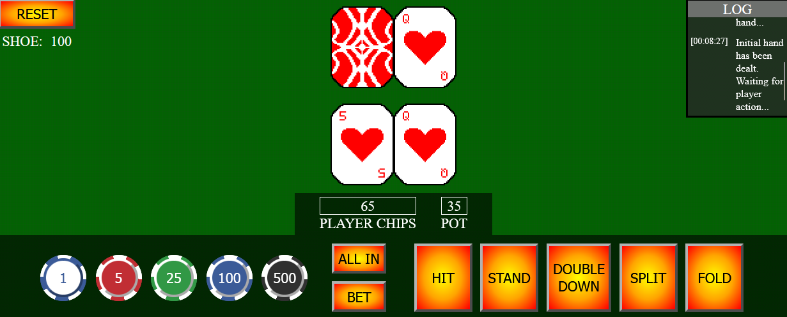
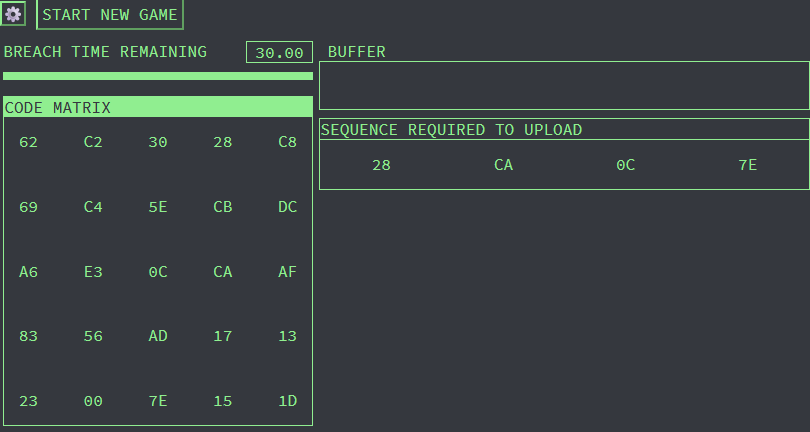
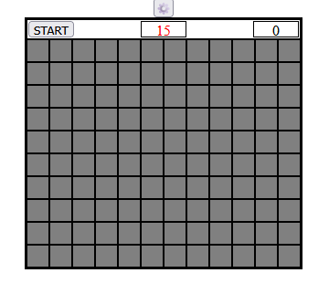

Home
|
Portfolio
|
Resume
|
LinkedIn
|
GitHub
Blackjack
February 2026 - Present

Strengthening my knowledge of JavaScript promises, async/await concepts, and CSS animations.
Used the Fisher-Yates algorithm to shuffle playing card decks.
Hacking Minigame
December 2025 - January 2026

Recreated the hacking minigame found in the video game Cyberpunk 2077.
Applied S.O.L.I.D. principles and JavaScript animation frames to optimize the timer on different devices and refresh rates.
Built my own algorithm for generating random hexadecimal matrices and solutions.
Minesweeper
November 2025 - December 2025

Used the depth-first search (DFS) algorithm to populate any cell with numbers indicating adjacent mines, and revealing empty cels on user clicks.
Credit Card Fraud Prediction
August 2021 - November 2021
Trained a machine learning model using logistic regression to analyze and predict credit card fraud.
Processed a data set using Python libraries such as Pandas, Matplotlib, Seaborn, Scipy, Numpy, Scikit-learn and Imbalanced-learn.
A.M.E.L. (Aerial Mission Event Log)
January 2020 - May 2020
Created an iOS application which assists pilots by recording in-flight events such as chagnes in flight speed and elevation.
Lead weekly in-person and online scum meetings.